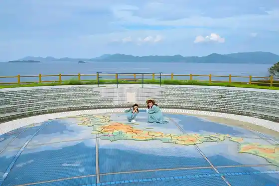
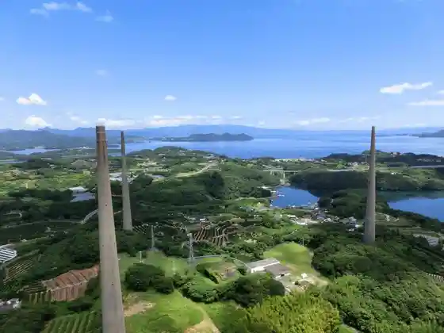
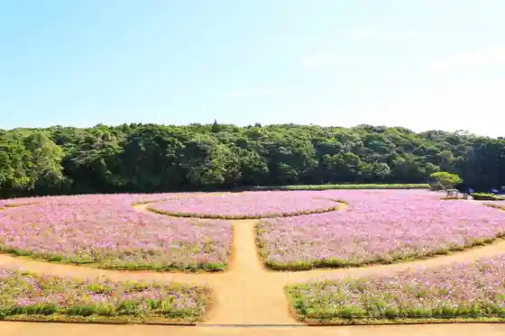

Hausutembosu
Sasebo, Nagasaki · 0570-064-110 · Official / source link
Kanzaki Hana Park
Sasebo, Nagasaki · 0956-22-6630 · Official / source link

Tsukumo Shima
Sasebo, Nagasaki · 0956-22-6630 · Official / source link
Hario Soshinjo Hario Musen to
Sasebo, Nagasaki · 0956-58-2718 · Official / source link

Ten Kaiho
Sasebo, Nagasaki · 0956-22-6630 · Official / source link

Saikai Hashi Shinzai Umi Hashi
Sasebo, Nagasaki · 0956-58-2004 · Official / source link
Kaijojieitai Sasebo Shiryo Kan (Seirutawa)
Sasebo, Nagasaki · 0956-22-3040 · Official / source link
Tsukumo Shima Kanko Park
Sasebo, Nagasaki · Official / source link
Parukuiin
Sasebo, Nagasaki · 0956-28-1999 · Official / source link
Tsukumo Shima Aquarium Umi Kirara
Sasebo, Nagasaki · 0956-28-4187 · Official / source link
Jufuku Tera
Sasebo, Nagasaki · 0956-65-2040 · Official / source link
Tsukumo Shima Parushii Resort
Sasebo, Nagasaki · 0956-28-4187 · Official / source link
Ishi Gaku Lookout
Sasebo, Nagasaki · 0956-22-6630 · Official / source link
Ko O City Ba Machi Tonneru Alley
Sasebo, Nagasaki · 0956-22-6630 · Official / source link
Mukyu Hora
Sasebo, Nagasaki · 0956-59-2003 · Official / source link
Yumihari Gaku Lookout
Sasebo, Nagasaki · 0956-22-6630 · Official / source link
Tenku no Yado Yama Noren
Sasebo, Nagasaki · 0956-76-2900 · Official / source link
Sasebo Shiki Sai Kan
Sasebo, Nagasaki · 0956-30-7744 · Official / source link
O Hashi Kannon Ishibashi
Sasebo, Nagasaki · 0956-22-6630 · Official / source link
Tsukumo Shima Do Botanical Garden Mori Kirara
Sasebo, Nagasaki · 0956-28-0011 · Official / source link
Saruku Shitei 403 A Ga Do
Sasebo, Nagasaki · 0956-24-4411 · Official / source link
Kyu Sasebo Chinju Fu Boku Shiki Tokoro Ato
Sasebo, Nagasaki · 0956-22-6630 · Official / source link
Kyukaigun Sasebo Chinju Fu Gaisen Memorial Museum (Sasebo Tami Bunka Horu)
Sasebo, Nagasaki · 0956-25-8192 · Official / source link
Sasebo Gobangai
Sasebo, Nagasaki · 0956-37-3555 · Official / source link
Tan Shima Shrine
Sasebo, Nagasaki · Official / source link
Sasebo Minato
Sasebo, Nagasaki · 0956-22-6630 · Official / source link
Mikawa Nai Sarayama
Sasebo, Nagasaki · 0956-22-6630 · Official / source link
Fukui Cave
Sasebo, Nagasaki · 0956-64-3830 · Official / source link
Senryogataki Park
Sasebo, Nagasaki · 0956-22-6630 · Official / source link
Megane Iwa
Sasebo, Nagasaki · 0956-22-6630 · Official / source link
Fujiyama Shrine
Sasebo, Nagasaki · 0956-46-0762 · Official / source link
Funakoshi Tembo Tokoro
Sasebo, Nagasaki · 0956-22-6630 · Official / source link
Utsuwa Rekishikan
Sasebo, Nagasaki · 0956-30-8080 · Official / source link
Ohama Beach (Campground)
Sasebo, Nagasaki · 0959-57-3935 · Official / source link
Sasebo Flower Garden
Sasebo, Nagasaki · 0956-59-8711 · Official / source link
Hotel Okura JR Hausutembosu
Sasebo, Nagasaki · 0956-58-7111 · Official / source link
Hiyamizu Gaku Park
Sasebo, Nagasaki · 0956-22-6630 · Official / source link
Sechibaru Kasseika Shisetsu (Kunimi no Sato)
Sasebo, Nagasaki · 0956-73-3600 · Official / source link
Soku Kinomiya (Saki Shrine)
Sasebo, Nagasaki · 0956-38-3920 · Official / source link
Shirahama Beach
Sasebo, Nagasaki · 0956-28-6099 · Official / source link
Jambofisshingu Village
Sasebo, Nagasaki · 0956-77-4951 · Official / source link
Senpuku Tera Cave
Sasebo, Nagasaki · 0956-22-6630 · Official / source link
Mikawa Nai Yaki Dento Sangyo Hall (Mikawa Nai Yaki Art Museum)
Sasebo, Nagasaki · 0956-30-8080 · Official / source link
Eki Machi 1 Chome Sasebo
Sasebo, Nagasaki · 0956-24-6523 · Official / source link
Eboshi Supotsu Village
Sasebo, Nagasaki · 0956-24-6669 · Official / source link
Cho Kushiyama Park
Sasebo, Nagasaki · 0956-77-4111 · Official / source link
Fukui Dokutsu Museum
Sasebo, Nagasaki · 0956-64-3830 · Official / source link
Hana no Mori Park
Sasebo, Nagasaki · 0956-22-6630 · Official / source link
Nogata Coast (Tsushima Se Lighthouse)
Sasebo, Nagasaki · 0959-57-3935 · Official / source link
Sasebo Jukogyo (SSK)
Sasebo, Nagasaki · 0956-25-9111 · Official / source link
Sasebo Kankojoho Center
Sasebo, Nagasaki · 0956-22-6630 · Official / source link
Sasebo Higashiyama Kaigun Bochi (Higashi Park)
Sasebo, Nagasaki · 0956-88-8397 · Official / source link
Aka Soba Village
Sasebo, Nagasaki · 0956-22-6630 · Official / source link
Shika Town Onsen Yasuragi Kan
Sasebo, Nagasaki · 0956-66-2617 · Official / source link
Dainen Tera Shoro Yamato
Sasebo, Nagasaki · 0956-38-2503 · Official / source link
Shirahama Campground
Sasebo, Nagasaki · 0956-28-6006 · Official / source link
Uragashira Hikiage Kinen Heiwa Park Museum
Sasebo, Nagasaki · 0956-58-2561 · Official / source link
Fuku Ishi Kannon Kiyoshi Iwa Tera
Sasebo, Nagasaki · 0956-31-8372 · Official / source link
Uku Taira Minato Taminaru
Sasebo, Nagasaki · Official / source link
Sasebo Park
Sasebo, Nagasaki · 0956-24-1111 · Official / source link
Daihi Kan Park
Sasebo, Nagasaki · 0956-22-6630 · Official / source link
U Watari Etsu Lookout
Sasebo, Nagasaki · 0956-22-6630 · Official / source link
Shirogagaku Tembo Tokoro
Sasebo, Nagasaki · 0959-57-3935 · Official / source link
Gaikokujin Ba
Sasebo, Nagasaki · Official / source link
Senryo Shuzo
Sasebo, Nagasaki · 0956-65-2209 · Official / source link
Iwashita Horana
Sasebo, Nagasaki · 0956-22-6630 · Official / source link
Arukasu SASEBO
Sasebo, Nagasaki · 0956-42-1111 · Official / source link
Pottohoru Park
Sasebo, Nagasaki · 0956-22-6630 · Official / source link
Yaku Shrine
Sasebo, Nagasaki · 0959-57-3935 · Official / source link
Shiratake Nature Park (Campground)
Sasebo, Nagasaki · 0956-66-9334 · Official / source link
Heigen Gorufu Ba
Sasebo, Nagasaki · 0959-57-3935 · Official / source link
Kyu Sasebo Kaihei Dan Ato
Sasebo, Nagasaki · 0956-22-6630 · Official / source link
Sasebo Koma Honpo
Sasebo, Nagasaki · 0956-22-7934 · Official / source link
Nagasaki Prefectural Sasebo Seishonen no Tenchi
Sasebo, Nagasaki · 0956-23-9616 · Official / source link
Sasebo Rojiura
Sasebo, Nagasaki · Official / source link
Suge Hama Beach
Sasebo, Nagasaki · 0959-57-3935 · Official / source link
Atago Yama
Sasebo, Nagasaki · 0956-22-6630 · Official / source link
Sasebo Chuo Park
Sasebo, Nagasaki · 0956-31-2611 · Official / source link
Iimori Shrine
Sasebo, Nagasaki · 090-7028-2795 · Official / source link
Miyaji Gaku Shrine
Sasebo, Nagasaki · 0956-22-7067 · Official / source link
Kuro Shima no Shuraku
Sasebo, Nagasaki · Official / source link
Kuro Shima Uerukamuhausu
Sasebo, Nagasaki · 0956-56-2311 · Official / source link
Mikawa Nai Yakie Tsuke Experience
Sasebo, Nagasaki · 0956-30-8080 · Official / source link
Cho Kushiyama Campground
Sasebo, Nagasaki · 0956-77-4111 · Official / source link
Saikai National Park Tsukumo Shima Bijita Center
Sasebo, Nagasaki · 0956-28-7919 · Official / source link
Kusumoto Hayama Kyutaku
Sasebo, Nagasaki · 0956-58-2144 · Official / source link
Maru Shussan Kansokujo Ato
Sasebo, Nagasaki · 0956-22-6630 · Official / source link
Kamishima Shrine
Sasebo, Nagasaki · 0959-57-3158 · Official / source link
Maki no Gaku Park
Sasebo, Nagasaki · 0956-22-6630 · Official / source link
Kameyama Hachiman Shrine
Sasebo, Nagasaki · 0956-24-8983 · Official / source link
Sasebo Museum Shima Se Bijutsu Center
Sasebo, Nagasaki · 0956-22-7213 · Official / source link
Hamakata Fureai Kan
Sasebo, Nagasaki · Official / source link
Sechibaru Tanko Museum (Kyu Matsura Tanko Jimusho)
Sasebo, Nagasaki · 0956-76-2279 · Official / source link
Kosaza Kaiyo Supotsu Kichi
Sasebo, Nagasaki · 0956-68-3378 · Official / source link
Toko Tera
Sasebo, Nagasaki · 0959-57-3935 · Official / source link
Fuzan Shrine
Sasebo, Nagasaki · 0956-22-6630 · Official / source link
Miura Shrine no Dai Sotetsu
Sasebo, Nagasaki · 0959-57-3935 · Official / source link
Kyu Rikugun Sasebo Yosai Kokubi Horui Ato
Sasebo, Nagasaki · Official / source link
Kunimi Yama
Sasebo, Nagasaki · 0956-22-6630 · Official / source link
JAZZ Ba
Sasebo, Nagasaki · Official / source link
Emukae Honjin Yamashita Ie Moto Kura
Sasebo, Nagasaki · 0956-65-2209 · Official / source link
Kan Jin Park
Sasebo, Nagasaki · Official / source link
Shiratake Shrine
Sasebo, Nagasaki · 0956-31-2700 · Official / source link
UKUSAUNA
Sasebo, Nagasaki · 090-3072-1137 · Official / source link
Heike Jo Ko Joriku Chi (Fune Kakushi)
Sasebo, Nagasaki · 0959-57-3935 · Official / source link
Takashima Ban Gaku
Sasebo, Nagasaki · 0956-22-6630 · Official / source link
Mikawa Nai Yaki Suka Shi Hori Experience
Sasebo, Nagasaki · 0956-30-8080 · Official / source link
Tenjin Park
Sasebo, Nagasaki · 0956-22-6630 · Official / source link
Saiko Tera
Sasebo, Nagasaki · 0956-46-0011 · Official / source link
Uku Shima Shiryo Kan
Sasebo, Nagasaki · 0956-57-3935 · Official / source link
Sechibaru Yoshii Ishibashi Gun
Sasebo, Nagasaki · 0956-22-6630 · Official / source link
Inkyo Gaku (Kakuidake) Park (Uokazu Park)
Sasebo, Nagasaki · 0956-39-5519 · Official / source link
Toso Shrine
Sasebo, Nagasaki · 0956-22-6630 · Official / source link
Nishi Kyushu Soko (Kabu) Maehata 1 Go Soko to Kan Jin Soko Gun
Sasebo, Nagasaki · 0956-22-6630 · Official / source link
Shika Town Kaiyo Supotsu Kichi
Sasebo, Nagasaki · 0956-73-2050 · Official / source link
Kougozaki Fune Bansho Ato
Sasebo, Nagasaki · 0956-22-6630 · Official / source link
Kushi no Hama Ganmyaku
Sasebo, Nagasaki · 0956-56-2765 · Official / source link
Mikawachi Yaki
Sasebo, Nagasaki · 0956-30-8311 · Official / source link
Shinko Fukkatsu no Chi Deguchi Ie
Sasebo, Nagasaki · 0956-56-2765 · Official / source link
Choku Kokujo Shi
Sasebo, Nagasaki · 0956-22-6630 · Official / source link
Tombai Hei Basha Michi
Sasebo, Nagasaki · 0956-22-6630 · Official / source link
Sasebo Kokusai Kantorii Kurabu Mikawa Nai Gorufu Ba
Sasebo, Nagasaki · 0956-30-7111 · Official / source link
BRICK MALL SASEBO
Sasebo, Nagasaki · Official / source link
Neya (Neya) no Dai Sazanka
Sasebo, Nagasaki · 0956-56-2311 · Official / source link
Mikawa Nai Higashi Kamato Nishi Kamato
Sasebo, Nagasaki · 0956-22-6630 · Official / source link
Koyasu Kannon Dai Kusu
Sasebo, Nagasaki · Official / source link
Warabi (Warabe) Viewpoint Tokoro
Sasebo, Nagasaki · 0956-56-2311 · Official / source link
Katamaranyotto (99TRITON)
Sasebo, Nagasaki · 0956-28-1999 · Official / source link
Horikawa Ebisu Miya (Kujira Ebisu)
Sasebo, Nagasaki · 0959-57-3935 · Official / source link